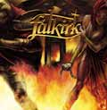

- click on the logo to read the full review -
4,5/5
An album close to the excellence (...) and a great surprise
at this beginning of this year which will please numerous metalheads.
 18/20
18/20
This nearly perfection of this album deserved the best note I ever gave for a review.
(Germany) 7,5/10
Discover the class of the songs, you will recognize that the French are among the best acts in their genre coming from this country.
 4,5/6
4,5/6
You can love it the style or not, but if you take the time to go through the gates of dawn, you'll find a young talented band.
 4/5
4/5
A band (...) which pushed his limits, and we thank him for that, because the result is simply impressive !
 4/5 (belgium)
4/5 (belgium)
Between a very melodic Blind Guardian and a rough Stratovarius, many traditional metal fans can enjoy this album.
 ***
***
After a single listening, we're stuck by the work done to reach such an impressive quality of songwriting.
Falkirk today is on the same level than any other foreign band, and better than 99% of french ones.
7/10 (serbia)
A members from band has showed evidental performing valuabilities, and I also have to recomand a cover of their CD's.
8,2/10 (greece)
A very good work from these French guys and i hope they will continue to write such good albums like their newest one.
 16/20
16/20
Everything to charm the fans and to conquer other ones
 6,5/10
6,5/10
We have super soli and catchy riffs and the melodies are legions.
 81/100
81/100
And I must admit (and I remain objective!!!) that the album blew me the f**k away !
 (spain)
(spain)
You will appreciate the work of this band.
7/10
Falkirk always delivers a very rich and
qualitative
music, which requires attention to enjoy its nuances.
3.5/5
The musicians took the right side of the melodic wave, and ignored its
irritating excesses.
- UNDERGROUND INVESTIGATION -
This new album has his creators' strength and creativity
{kind=link}

They reach a real potential, which is comparable with foreign countries professionnals.
Gates of Dawn is a good album for this kind of metal addicts, and for metal fans in general.
- Metalchroniques - 6,5/10
Falkirk wanted a very varied album, and it's succesful
3,5/5
The parisian band gives us a good heavy metal album

This album gives us more than an hour full of ambitious songs, where the voice of Stéphane Fradet is great again.
 8,5/10
8,5/10
Falkirk is a good discovery, a very good indeed.

The interpretation is great. We have many occasions to enjoy splendid solos which emerge here and there.

Always better after each album, with its great melodic lines and beautiful heavy songs.
METAL CD RATINGS (USA) 3,5/5
So add this CD to your list of very solid CDs that (if you're a fan of epic power metal) should be picked up at some point.
______________________________________________

- click on the logo to read the full review -
.jpg){kind=link}
.jpg){kind=link}
.jpg){kind=link}
.jpg){kind=link}
croni.jpg){kind=link}
.jpg){kind=link}
{kind=link}
{kind=link}
.jpg){kind=link}
.gif){kind=link}
.jpg){kind=link}
.jpg){kind=link}
{kind=link}